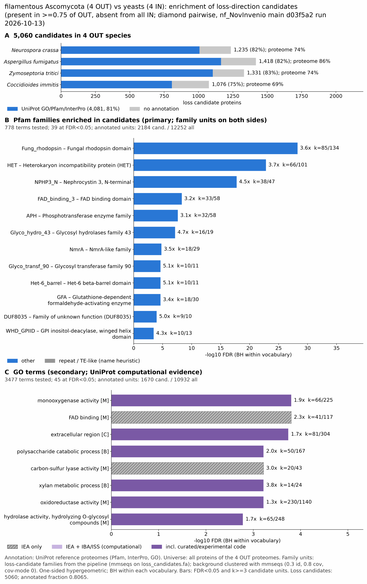

yeast filamentous: functional enrichment (loss)
One-sided hypergeometric test per term; Benjamini-Hochberg FDR within each scope, level and vocabulary. Candidates are the loss candidates: gene families present in the OUT group and absent from the IN group. Universe: proteome. Background clustered: True (34884 sequences in 19574 clusters, mmseqs easy-cluster --min-seq-id 0.3 -c 0.8). Family level: one unit per candidate family and per background cluster.
Sources: Pfam: 2026-01-27-Pfam38.2; InterPro entries: 110.0; GO: releases/2026-07-26; analysis generated 2026-10-13T22:10:41. Source tables: studies/fungi/yeast_filamentous/analysis/enrichment/outputs/loss/proteome_clustered.
Full record: PROVENANCE. Run report: report.html.
- Annotation provenance is not fully recorded: PROVENANCE.yaml lists the per-species annotation files and their checksums, but not the UniProt release they come from.
- GO results are secondary. GO annotations include computational evidence (IEA, IBA); the GO evidence column shows if a term has non-IEA support.
- Candidate families (pipeline clustering of candidates) and background clusters (mmseqs clustering of the background proteome) are made by different runs, so family-level counts are not fully comparable.
Summary figure

Annotation coverage
Fraction of proteins with at least one term per vocabulary. Universe = all proteins of the species; candidates = the candidate set.
| Species | Set | Proteins | Pfam | Pfam clan | InterPro | GO | Any |
|---|---|---|---|---|---|---|---|
| Ncra | universe | 9759 | 68.5% | 54.6% | 73.4% | 64.3% | 74.1% |
| Ncra | candidates | 1235 | 71.1% | 53.4% | 80.3% | 55.6% | 81.5% |
| Afum | universe | 9647 | 79.8% | 65.9% | 85.1% | 76.1% | 85.8% |
| Afum | candidates | 1418 | 70.0% | 55.7% | 80.5% | 58.7% | 82.1% |
| Ztri | universe | 10951 | 68.1% | 56.0% | 73.3% | 61.6% | 73.5% |
| Ztri | candidates | 1331 | 73.0% | 57.7% | 82.4% | 53.3% | 83.0% |
| Cimm | universe | 9587 | 64.1% | 51.6% | 68.6% | 58.6% | 68.9% |
| Cimm | candidates | 1076 | 63.7% | 48.1% | 73.7% | 45.3% | 74.9% |
| ALL_OUT | universe | 39944 | 70.1% | 57.0% | 75.0% | 65.0% | 75.5% |
| ALL_OUT | candidates | 5060 | 69.7% | 54.1% | 79.5% | 53.7% | 80.7% |
Tests summary
Per vocabulary: terms with FDR < 0.05 / terms tested. Protein level counts proteins; family level counts candidate families and background clusters.
| Scope | Level | Cand. units | Pfam sig / tested | Pfam clan sig / tested | InterPro sig / tested | GO sig / tested |
|---|---|---|---|---|---|---|
| whole_set | family | 3215 | 39 / 778 | 14 / 313 | 72 / 1680 | 45 / 3477 |
| whole_set | protein | 5060 | 182 / 1795 | 46 / 425 | 347 / 3953 | 169 / 5193 |
| Afum | family | 1291 | 14 / 331 | 4 / 236 | 21 / 830 | 12 / 2764 |
| Afum | protein | 1418 | 27 / 438 | 15 / 253 | 61 / 1068 | 35 / 2954 |
| Cimm | family | 1013 | 7 / 263 | 2 / 212 | 11 / 686 | 3 / 2043 |
| Cimm | protein | 1076 | 12 / 304 | 5 / 223 | 19 / 803 | 5 / 2120 |
| Ncra | family | 1147 | 9 / 306 | 10 / 237 | 18 / 781 | 29 / 2603 |
| Ncra | protein | 1235 | 16 / 368 | 12 / 244 | 39 / 914 | 37 / 2700 |
| Ztri | family | 1189 | 17 / 330 | 8 / 238 | 31 / 828 | 24 / 2506 |
| Ztri | protein | 1331 | 31 / 406 | 16 / 248 | 62 / 1014 | 47 / 2636 |
Top 25 Pfam terms (whole set, family level)
25 rows shown, ordered by FDR then p-value; 25 have FDR < 0.05 (bold).
| Term | Name | k / N cand. | n / M bg | Fold | FDR (BH) |
|---|---|---|---|---|---|
| PF20684 | Fung_rhodopsin: Fungal rhodopsin domain | 85 / 2184 | 134 / 12252 | 3.559 | 5.24e-29 |
| PF06985 | HET: Heterokaryon incompatibility protein (HET) | 66 / 2184 | 101 / 12252 | 3.666 | 1.49e-23 |
| PF24883 | NPHP3_N: Nephrocystin 3, N-terminal | 38 / 2184 | 47 / 12252 | 4.536 | 1.73e-18 |
| PF01494 | FAD_binding_3: FAD binding domain | 33 / 2184 | 58 / 12252 | 3.192 | 4.98e-09 |
| PF01636 | APH: Phosphotransferase enzyme family | 32 / 2184 | 58 / 12252 | 3.095 | 2.39e-08 |
| PF04616 | Glyco_hydro_43: Glycosyl hydrolases family 43 | 16 / 2184 | 19 / 12252 | 4.724 | 7.22e-08 |
| PF05368 | NmrA: NmrA-like family | 18 / 2184 | 29 / 12252 | 3.482 | 1.60e-05 |
| PF05686 | Glyco_transf_90: Glycosyl transferase family 90 | 10 / 2184 | 11 / 12252 | 5.1 | 2.33e-05 |
| PF26639 | Het-6_barrel: Het-6 beta-barrel domain | 10 / 2184 | 11 / 12252 | 5.1 | 2.33e-05 |
| PF04828 | GFA: Glutathione-dependent formaldehyde-activating enzyme | 18 / 2184 | 30 / 12252 | 3.366 | 2.33e-05 |
| PF26118 | DUF8035: Family of unknown function (DUF8035) | 9 / 2184 | 10 / 12252 | 5.049 | 1.07e-04 |
| PF22939 | WHD_GPIID: GPI inositol-deacylase, winged helix domain | 10 / 2184 | 13 / 12252 | 4.315 | 3.49e-04 |
| PF01757 | Acyl_transf_3: Acyltransferase domain | 8 / 2184 | 9 / 12252 | 4.987 | 4.25e-04 |
| PF13813 | MBOAT_2: Membrane bound O-acyl transferase family | 8 / 2184 | 9 / 12252 | 4.987 | 4.25e-04 |
| PF11807 | UstYa: Mycotoxin biosynthesis protein UstYa | 18 / 2184 | 37 / 12252 | 2.729 | 8.89e-04 |
| PF00931 | NB-ARC: NB-ARC domain | 6 / 2184 | 6 / 12252 | 5.61 | 0.001 |
| PF25540 | DUF7923: Domain of unknown function (DUF7923) | 6 / 2184 | 6 / 12252 | 5.61 | 0.001 |
| PF26176 | zf_C2H2_17_2: C2H2-domain containing protein second zinc finger domain | 7 / 2184 | 8 / 12252 | 4.909 | 0.002 |
| PF13640 | 2OG-FeII_Oxy_3: 2OG-Fe(II) oxygenase superfamily | 9 / 2184 | 13 / 12252 | 3.884 | 0.003 |
| PF00703 | Glyco_hydro_2: Glycosyl hydrolases family 2 | 7 / 2184 | 9 / 12252 | 4.363 | 0.005 |
| PF01083 | Cutinase: Cutinase | 7 / 2184 | 9 / 12252 | 4.363 | 0.005 |
| PF10021 | PARG_cat_microb: Microbial-type PARG, catalytic domain | 5 / 2184 | 5 / 12252 | 5.61 | 0.005 |
| PF14269 | Arylsulfotran_2: Arylsulfotransferase (ASST) | 5 / 2184 | 5 / 12252 | 5.61 | 0.005 |
| PF23658 | PDZ_CPAF_rel: CPAF-like PDZ domain | 5 / 2184 | 5 / 12252 | 5.61 | 0.005 |
| PF24355 | DUF7514: Domain of unknown function (DUF7514) | 5 / 2184 | 5 / 12252 | 5.61 | 0.005 |
Top 25 InterPro terms (whole set, family level)
25 rows shown, ordered by FDR then p-value; 25 have FDR < 0.05 (bold).
| Term | Name | k / N cand. | n / M bg | Fold | FDR (BH) |
|---|---|---|---|---|---|
| IPR049326 | Domain:Rhodopsin domain, fungi | 85 / 2511 | 134 / 13609 | 3.438 | 1.72e-27 |
| IPR052337 | Family:Satratoxin biosynthesis SC1 cluster protein 4-like | 74 / 2511 | 119 / 13609 | 3.37 | 3.53e-23 |
| IPR010730 | Domain:Heterokaryon incompatibility | 66 / 2511 | 101 / 13609 | 3.542 | 1.76e-22 |
| IPR056884 | Domain:Nephrocystin 3-like, N-terminal | 38 / 2511 | 47 / 13609 | 4.382 | 1.01e-17 |
| IPR052895 | Family:Heterokaryon incompatibility protein 6 | 29 / 2511 | 37 / 13609 | 4.248 | 1.24e-12 |
| IPR051678 | Family:Aminoglycoside Phosphotransferase Enzymes | 34 / 2511 | 55 / 13609 | 3.35 | 3.63e-10 |
| IPR002938 | Domain:FAD-binding domain | 33 / 2511 | 58 / 13609 | 3.084 | 1.63e-08 |
| IPR002575 | Domain:Aminoglycoside phosphotransferase | 32 / 2511 | 58 / 13609 | 2.99 | 8.21e-08 |
| IPR006710 | Family:Glycoside hydrolase, family 43 | 16 / 2511 | 19 / 13609 | 4.564 | 1.78e-07 |
| IPR023296 | Homologous_superfamily:Glycosyl hydrolase, five-bladed beta-propeller domain superfamily | 20 / 2511 | 31 / 13609 | 3.497 | 3.41e-06 |
| IPR053137 | Family:Nucleotide-binding leucine-rich repeat (NLR)-like | 14 / 2511 | 18 / 13609 | 4.215 | 1.13e-05 |
| IPR006913 | Domain:CENP-V/GFA domain | 19 / 2511 | 31 / 13609 | 3.322 | 2.14e-05 |
| IPR008030 | Domain:NmrA-like domain | 18 / 2511 | 29 / 13609 | 3.364 | 3.22e-05 |
| IPR006598 | Domain:Glycosyl transferase CAP10 domain | 10 / 2511 | 11 / 13609 | 4.927 | 4.95e-05 |
| IPR036188 | Homologous_superfamily:FAD/NAD(P)-binding domain superfamily | 63 / 2511 | 190 / 13609 | 1.797 | 8.65e-05 |
| IPR011057 | Homologous_superfamily:Mss4-like superfamily | 20 / 2511 | 37 / 13609 | 2.93 | 1.27e-04 |
| IPR029058 | Homologous_superfamily:Alpha/Beta hydrolase fold | 91 / 2511 | 310 / 13609 | 1.591 | 1.56e-04 |
| IPR052210 | Family:Secreted LysM effector LysM1-like | 9 / 2511 | 10 / 13609 | 4.878 | 1.73e-04 |
| IPR058348 | Domain:Domain of unknown function DUF8035 | 9 / 2511 | 10 / 13609 | 4.878 | 1.73e-04 |
| IPR051091 | Family:Protein O-Glucosyltransferase/Glycosyltransferase 90 | 10 / 2511 | 12 / 13609 | 4.516 | 1.73e-04 |
| IPR054471 | Domain:GPI inositol-deacylase, winged helix domain | 10 / 2511 | 13 / 13609 | 4.169 | 5.96e-04 |
| IPR035994 | Homologous_superfamily:Nucleoside phosphorylase superfamily | 12 / 2511 | 18 / 13609 | 3.613 | 6.73e-04 |
| IPR002656 | Domain:Acyltransferase 3 domain | 8 / 2511 | 9 / 13609 | 4.818 | 6.73e-04 |
| IPR032805 | Domain:Wax synthase domain | 8 / 2511 | 9 / 13609 | 4.818 | 6.73e-04 |
| IPR050879 | Family:Acyltransferase 3 | 8 / 2511 | 9 / 13609 | 4.818 | 6.73e-04 |
Top 15 GO terms (whole set, family level) — secondary, computational evidence (IEA/IBA) included
15 rows shown, ordered by FDR then p-value; 15 have FDR < 0.05 (bold).
| Term | Name | k / N cand. | n / M bg | Fold | FDR (BH) | GO evidence | Families with non-IEA |
|---|---|---|---|---|---|---|---|
| GO:0004497 | molecular_function:monooxygenase activity | 66 / 1670 | 225 / 10932 | 1.92 | 1.58e-04 | has_non_IEA | 19 |
| GO:0071949 | molecular_function:FAD binding | 41 / 1670 | 117 / 10932 | 2.294 | 1.58e-04 | IEA_only | 0 |
| GO:0005576 | cellular_component:extracellular region | 81 / 1670 | 304 / 10932 | 1.744 | 1.82e-04 | has_non_IEA | 16 |
| GO:0000272 | biological_process:polysaccharide catabolic process | 50 / 1670 | 167 / 10932 | 1.96 | 6.08e-04 | has_non_IEA | 20 |
| GO:0016846 | molecular_function:carbon-sulfur lyase activity | 20 / 1670 | 43 / 10932 | 3.045 | 6.08e-04 | IEA_only | 0 |
| GO:0045491 | biological_process:xylan metabolic process | 14 / 1670 | 24 / 10932 | 3.819 | 6.08e-04 | has_non_IEA | 6 |
| GO:0045493 | biological_process:xylan catabolic process | 14 / 1670 | 24 / 10932 | 3.819 | 6.08e-04 | has_non_IEA | 6 |
| GO:2000895 | biological_process:hemicellulose catabolic process | 14 / 1670 | 24 / 10932 | 3.819 | 6.08e-04 | has_non_IEA | 6 |
| GO:0016491 | molecular_function:oxidoreductase activity | 230 / 1670 | 1140 / 10932 | 1.321 | 6.08e-04 | has_non_IEA | 74 |
| GO:0004553 | molecular_function:hydrolase activity, hydrolyzing O-glycosyl compounds | 65 / 1670 | 248 / 10932 | 1.716 | 0.002 | has_non_IEA | 24 |
| GO:0016052 | biological_process:carbohydrate catabolic process | 62 / 1670 | 235 / 10932 | 1.727 | 0.002 | has_non_IEA | 30 |
| GO:0043385 | biological_process:mycotoxin metabolic process | 23 / 1670 | 59 / 10932 | 2.552 | 0.002 | has_non_IEA | 3 |
| GO:0043386 | biological_process:mycotoxin biosynthetic process | 23 / 1670 | 59 / 10932 | 2.552 | 0.002 | has_non_IEA | 3 |
| GO:0008061 | molecular_function:chitin binding | 18 / 1670 | 42 / 10932 | 2.805 | 0.004 | IEA_only | 0 |
| GO:0001676 | biological_process:long-chain fatty acid metabolic process | 14 / 1670 | 28 / 10932 | 3.273 | 0.004 | has_non_IEA | 6 |
Actin cytoskeleton controls
Known actin-related families and how many of their proteins pass each filter. Protein ID columns are left out.
| control | pfam_ids | desc_regex | OUT_universe | OUT_in_matrix | OUT_pass_outgroup_rule | candidates | near_miss_in1 | near_miss_in2 | n_Ncra | n_Afum | n_Ztri | n_Cimm | n_Scer | n_Ylip | n_Spom | n_Nirr |
|---|---|---|---|---|---|---|---|---|---|---|---|---|---|---|---|---|
| Arp2/3 ARPC2 (P34-Arc) | PF04045 | 4 | 4 | 4 | 0 | 0 | 0 | 1 | 1 | 1 | 1 | 1 | 1 | 1 | 1 | |
| Arp2/3 ARPC3 (P21-Arc) | PF04062 | 4 | 4 | 4 | 0 | 0 | 0 | 1 | 1 | 1 | 1 | 1 | 1 | 1 | 0 | |
| Arp2/3 ARPC4 | PF05856 | 4 | 4 | 4 | 0 | 0 | 0 | 1 | 1 | 1 | 1 | 1 | 1 | 1 | 1 | |
| Arp2/3 ARPC5 (P16-Arc) | PF04699 | 4 | 4 | 4 | 0 | 0 | 0 | 1 | 1 | 1 | 1 | 1 | 1 | 1 | 1 | |
| Arp2/3 ARPC1 (description only) | arp2/3 complex.*(41|p41|subunit 1)|ARPC1 | 0 | 0 | 0 | 0 | 0 | 0 | 0 | 0 | 0 | 0 | 0 | 0 | 0 | 1 | |
| Arp2 / Arp3 (description only) | actin-related protein (2|3)\b|\bARP[23]\b | 28 | 28 | 28 | 0 | 1 | 0 | 6 | 8 | 7 | 7 | 7 | 6 | 7 | 6 | |
| WAVE complex NCKAP1 | PF09735 | 0 | 0 | 0 | 0 | 0 | 0 | 0 | 0 | 0 | 0 | 0 | 0 | 0 | 0 | |
| WAVE complex CYFIP (FragX_IP) | PF05994 | 0 | 0 | 0 | 0 | 0 | 0 | 0 | 0 | 0 | 0 | 0 | 0 | 0 | 0 | |
| WAVE complex ABI | PF07815|PF27594 | 0 | 0 | 0 | 0 | 0 | 0 | 0 | 0 | 0 | 0 | 0 | 0 | 0 | 0 | |
| SCAR/WAVE (SCAR_helical) | PF27569 | 0 | 0 | 0 | 0 | 0 | 0 | 0 | 0 | 0 | 0 | 0 | 0 | 0 | 0 | |
| WASP family (WH1) | PF00568 | 4 | 4 | 4 | 0 | 0 | 0 | 1 | 1 | 1 | 1 | 1 | 1 | 1 | 1 | |
| WH2 motif (WASP, WAVE, others) | PF02205 | 9 | 9 | 9 | 0 | 0 | 0 | 1 | 3 | 3 | 2 | 2 | 2 | 2 | 2 | |
| Formin FH2 | PF02181 | 4 | 4 | 4 | 0 | 0 | 0 | 1 | 1 | 1 | 1 | 2 | 1 | 3 | 1 | |
| Formin Drf_GBD / Drf_FH3 / Drf_DAD | PF06371|PF06367|PF06345 | 8 | 8 | 8 | 0 | 0 | 4 | 2 | 2 | 2 | 2 | 1 | 1 | 4 | 2 | |
| Ena/VASP (VASP_tetra) | PF08776 | 0 | 0 | 0 | 0 | 0 | 0 | 0 | 0 | 0 | 0 | 0 | 0 | 0 | 0 | |
| Coronin (description only) | coronin | 4 | 4 | 4 | 0 | 0 | 0 | 1 | 1 | 1 | 1 | 1 | 1 | 1 | 1 | |
| Cortactin (HS1_rep) | PF02218 | 0 | 0 | 0 | 0 | 0 | 0 | 0 | 0 | 0 | 0 | 0 | 0 | 0 | 0 | |
| Myosin 2 tail (Myosin_tail_1) | PF01576 | 1 | 1 | 1 | 0 | 0 | 0 | 0 | 1 | 0 | 0 | 0 | 0 | 0 | 0 | |
| Myosin head (all myosins) | PF00063 | 17 | 17 | 17 | 0 | 0 | 0 | 4 | 4 | 5 | 4 | 5 | 4 | 5 | 5 |
Page written by bin/generate_enrichment_page.py.